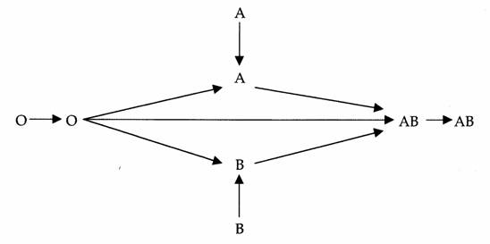
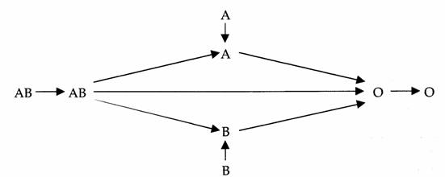

Les groupes sanguins
Immuno-hematologie
L'antigene (Ag)
L'antigene
substance biologique (proteine, glucide) capable de provoquer une
reaction immunitaire et de reagir specifiquement avec le produit de
cette reaction (anticorps).
L'anticorps (Ac)
L'anticorps est une immunoglobuline (Ig) dont la production est
provoquee par l’administration d’un antigene et capable de se lier
specifiquement a lui.
- Anticorps immuns : immunisation
par grossesse ou transfusion.
- Anticorps naturels : presence
systematique sans immunisation :
- Anticorps reguliers : presents
chez tous les individus n’ayant pas l’antigene.
- Anticorps irreguliers :
presents chez certains individus n’ayant pas l’antigene.
La reaction antigene/anticorps (Ag-Ac)
au niveau du globule rouge
- Hemolyse
(in-vivo) : destruction par lyse membranaire des globules
rouges. En transfusion, c’est la consequence d’une incompatibilite
immunologique oe des anticorps se fixent sur des antigenes
correspondants de groupe sanguin.
- Agglutination
(in-vitro) : formation d’amas due a la fixation des anticorps
sur les antigenes correspondants de groupe sanguin.
- Antigene A + Anticorps anti-A =
agglutination
- Antigene A + Anticorps anti-B
= pas d’agglutination
Le
systeme ABO
Le systeme
ABO est definie par la presence d’antigenes (A, B) a la
surface des globules rouges et la presence d’anticorps reguliers dans
le plasma.
Les anticorps du systeme ABO sont constamment presents :
- Un sujet de groupe A a l’antigene A et
des anticorps anti-B.
- Un sujet de groupe B a l’antigene B et
des anticorps anti-A.
- Un sujet de groupe O n’a pas
d’antigene
et a des anticorps
anti-A et
anti-B.
- Un sujet de groupe AB a
l’antigene A et
l’antigene B et n’a pas
d’anticorps.
Epreuve de Beth-vincent
L’epreuve
de Beth-Vncent permet l’identification des antigenes
globulaires en mettant en contact les globules rouges a tester et les
anticorps connus (anti-A, anti-B, anti-A+B).
| Epreuve de
Beth-vincent |
| |
Anti-A |
Anti-B |
Anti A+B |
| A |
+ |
- |
+ |
| B |
- |
+ |
+ |
| O |
- |
- |
- |
| AB |
+ |
+ |
+ |
(+) = presence d’agglutination
Epreuve de Simonin
L’epreuve
de Simonin permet l’identification des anticorps plasmatiques
en mettant en contact le plasma du sang a tester et les antigenes
sanguins connus (A, B).
| Epreuve de
Simonin |
| |
A |
B |
| A |
- |
+ |
| B |
+ |
- |
| O |
+ |
+ |
| AB |
- |
- |
(+) = presence d’agglutination
Regle de compatibilite ABO
Transfusion sanguine

Transfusion de plasma

Le
systeme Rh
Le systeme
Rh se definit par 5 antigenes principaux :
- D ou Rh1
- C ou Rh2
- E ou Rh3
- c ou Rh4
- e ou Rh
Les
personnes possedant l’antigene D sont Rhesus positif et sont dits
Rh1 ou RhD.
La
presence ou l’absence des antigene C, E, c, e, est analysee dans le
cadre du phenotype Rh-KEL1 qui comporte en outre la recherche de
l’antigene K du systeme KELL.
Un
Concentre de Globules Rouges (CGR) est dit qualifie
antigeno-compatible RH-KEL1 lorsqu’il est compatible pour les antigenes
Rh1, Rh2, Rh3, Rh4, Rh5 et KEL1.
Les
systemes KELL, DUFFY, KIDD
Dans les
systemes Kell (Ag K1 et K2), Duffy (Ag Fya et Fyb), Kidd (Ag
Jka et Jkb), les anticorps sont irreguliers et immuns, c'est e
dire :
- Ils ne sont presents que chez certains
individus qui n’ont pas
l’antigene (irreguliers).
- Ils resultent d’une immunisation par
grossesse ou par transfusion
incompatible (immuns).
Le sujet
s’immunise alors contre un antigene qu’il ne possede pas.
- Ces anticorps sont detectes par la
Recherche d’Agglutines Irregulieres
(RAI).
Recherche d’Agglutinine
Irreguliere : RAI
La RAI est
la recherche d’anticorps irregulier, qui consiste e
rechercher dans le plasma du patient, des anticorps, diriges contre un
panel de globules rouges tests, representatifs des principaux antigenes
connus.
Si la RAI se revele positive, la transfusion se fera par du :
- Sang phenotype : ne contenant
pas les antigenes du receveur.
- Sang crosse : test de
compatibilite qui consiste en la mise en
contact directe du plasma du patient avec les globules rouges de la
poche a transfuser.
La RAI a
une validite de 72 heures. Depasser ce delai, il faut realiser un
nouveau prelevement.
Voir aussi :